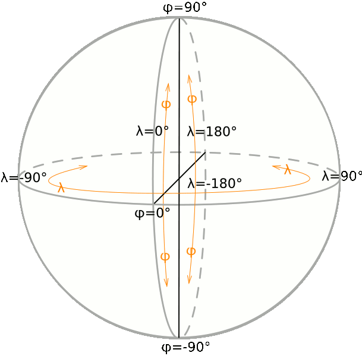

"font-size: 32pt">what's this SRID stuff ? ...
I've never heard this term before now ...
"HTML Tidy for HTML5 for Linux version 5.6.0" />
|
"font-size: 32pt">what's this SRID stuff ? ... |
| 2011 January 28 |
| Next |
|
What's this SRID stuff ? ... I've never heard this term before now ... Planet Earth is a sphere ... not exactly, planet Earth has an ellipsoidal shape (slightly flattened at poles) ... regular shape, it actually is a geoid different approximation levels. rather slight and quite unnoticeable; but neat both Poles such differences becomes greater and most easily appreciable. geoid are very slim: but for long range aircraft navigation (or even worse, for satellite positioning), this is too much simplistic "http://commons.wikimedia.org/wiki/File:Geographic_coordinates_sphere.svg">  "lat-long illustration" /> of each point on the planet surface can precisely determined simply measuring two angles: longitude and latitude. SRS] we can use the Poles and the Equator (which after all are outstanding places by intrinsic astronomic properties): choosing a Prime Meridian on the other side is absolutely conventional: but since many centuries (Britannia rule the waves ...) adopting the Greenwich Meridian is an obvious choice. Geographic System. Using a Geographic SRS surely grants you maximum precision and accuracy: but unhappily this fatally implies several undesirable side-effects:
(conventional) systems enabling to represent spherical surfaces into a flatten plane: none of them all is the best one. choosing the one or the other implies an absolutely arbitrary and conventional process: a map projection good to represent small Earth's portions can easily be awful when used to represent very wide territories, and vice versa. Mercator] map projection, simply because it's really often "http://en.wikipedia.org/wiki/File:Usgs_map_traverse_mercator.PNG"> "http://en.wikipedia.org/wiki/File:MercTranSph.png"> "../img/utm1.jpg" alt="UTM projected" /> deformations: but when you carefully focus your attention on the narrow central fuse, you'll immediately recognize that UTM allows to get a nearly perfect planar projection of excellent quality. narrow (let say, it will span only few degrees on both sides). As the fuse becomes wider, as much more deformations will become stronger and more evident. "../img/utm2.jpg" alt="UTM Zones" /> standard zones, each one covering exactly 6 longitude degrees. accuracy, but is still acceptable for many practical purposes: exceeding this limit produces really low-quality results, and has to be absolutely avoided.
"font-size: 16pt">Attempting to standardize the chaos
at least one (and very often, more than one) map projection system and related SRS: the overall result is absolutely chaotic (and really painful to be handled). easier correctly handling map SRS: the European Petroleum Survey Group [EPSG] maintains a huge worldwide dataset of more than 3,700 different entries. role; many others are only useful in very limited national boundaries. identified by its numeric ID and descriptive name, so to avoid any possible confusion and ambiguity. for each Geometry: but such SRID simply is a Spatial Reference ID, and (hopefully) coincides with the corresponding EPSG ID is a quite complete list of SRIDs often used in a (small) Nation such as Italy:
And the following examples may help to understand even better:
As you can easily notice:
And now we can examine how using different SRSes affects distances:
measures any measured value is intrinsically affected by errors and approximations. and truncation artifacts. you have to be conscious that you can simply get some more or less approximated value. approximations in the best possible way. |
||||||||||||||||||||||||||||||||||||||||||||||||||||||||||||||||||||||||||
| Next |

"CC-BY-SA logo" /> |
Author: Alessandro Furieri |
| This work is licensed under the
"http://creativecommons.org/licenses/by-sa/3.0/">Attribution-ShareAlike 3.0 Unported (CC BY-SA 3.0) license. |
|
|
|
|
 |
Permission is granted to copy, distribute and/or modify this
document under the terms of the Documentation License, Version 1.3 or any later version published by the Free Software Foundation; Texts. |